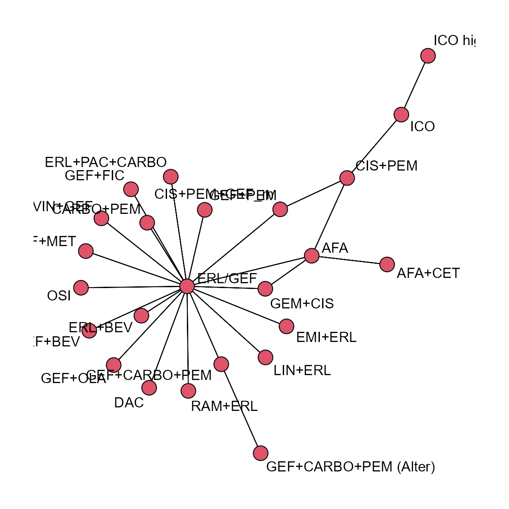

Introduction
This document describes how to use the main functions of
NMA to run a single network meta-analysis.
Example
Settings
Define the BUGS parameters for MCMC.
bugs_params <-
list(
PROG = "openBugs",
N.BURNIN = 10,#00,
N.SIMS = 150,#0,
N.CHAINS = 2,
N.THIN = 1,
PAUSE = TRUE)Define the scenario we will use for the analysis.
RANDOM <- FALSE
REFTX <- "ERL/GEF"
is_bin <- TRUE
is_med <- TRUE
label_name <- "BC_PFS_mFE"
endpoint <- "PFS"
analysis_type <- "BC"Read in datasets
The trials data consist of up to 3 separate dataframes. A main table,
subData, and optional tables for median event time and
binary data, subDataMed and subDataBin
respectively.
file_name <- paste0(here::here("raw_data"), "/survdata_", endpoint, "_")
subData <-
read.csv(paste0(file_name, analysis_type, ".csv"),
header = TRUE,
as.is = TRUE)
subDataBin <-
if (is_bin) {
read.csv(paste0(file_name, "bin.csv"),
header = TRUE,
as.is = TRUE)
} else {NA}
subDataMed <-
if (is_med) {
read.csv(paste0(file_name, "med.csv"),
header = TRUE,
as.is = TRUE) %>%
mutate(medR = floor(medR))
} else {NA}Build model
Now we can create the NMA object to use in the modelling.
nma_model <-
new_NMA(subData = subData,
subDataMed = subDataMed,
subDataBin = subDataBin,
bugs_params = bugs_params,
is_random = RANDOM,
refTx = REFTX ,
effectParam = "beta",
modelParams = "totresdev",
label = label_name,
endpoint = endpoint)
nma_model
#> $dat
#> $dat$inits
#> function() {
#> list(
#> beta = c(NA, rnorm(nTx - 1, 0, 2)),
#> sd = 0.1,
#> alpha = rnorm(nStudies)) %>%
#> .[param_names]
#> }
#> <bytecode: 0x000000001615aa70>
#> <environment: 0x000000001615e418>
#>
#> $dat$subData
#> X study base tx
#> 1 6 ARCHER 1050 (Wu, 2017) ERL/GEF DAC
#> 2 9 CONVINCE (Shi 2017) CIS+PEM ICO
#> 3 26 CTRI/2015/08/006113 (Patil 2017) CARBO+PEM ERL/GEF
#> 4 15 CTRI/2016/08/007149 (Noronha 2019b) ERL/GEF GEF+CARBO+PEM
#> 5 22 ENSURE (Wu 2015) GEM+CIS ERL/GEF
#> 6 5 FLAURA (Soria 2018) ERL/GEF OSI
#> 7 4 GOAL (Campelo 2018) ERL/GEF GEF+OLA
#> 8 3 INCREASE (Li 2018) ICO ICO high-dose
#> 9 17 JO25567 (JapicCTI-111390) (Seto 2014) ERL/GEF ERL+BEV
#> 10 2 LUX-Lung 3 (Sequist 2013) CIS+PEM AFA
#> 11 24 LUX-Lung 6 (Wu 2014a)\n GEM+CIS AFA
#> 12 25 LUX-Lung 7 (Park 2016) ERL/GEF AFA
#> 13 20 NCT01017874 (Yang, 2014) ERL/GEF CIS+PEM+GEF_m
#> 14 7 NCT01221077 (Leighl 2017 ERL/GEF LIN+ERL
#> 15 18 NCT01469000 (Yang, 2020) ERL/GEF GEF+PEM
#> 16 16 NCT01532089 (Stinchcombe 2019) ERL/GEF ERL+BEV
#> 17 21 NCT01769066 (Yu 2014) CIS+PEM CIS+PEM+GEF_m
#> 18 28 NCT01864681 (Li 2019) ERL/GEF GEF+MET
#> 19 8 NCT01897480 (Scagliotti, 2020) ERL/GEF EMI+ERL
#> 20 12 NCT02148380 (Han, 2017) ERL/GEF CARBO+PEM
#> 21 10 NCT02148380 (Han, 2017) ERL/GEF ERL/GEF
#> 22 11 NCT02148380 (Han, 2017) ERL/GEF GEF+CARBO+PEM
#> 23 13 NEJ005/TCOG0902 (Sugawara, 2015) GEF+CARBO+PEM (Alter) GEF+CARBO+PEM
#> 24 27 NEJ009 (UMIN000006340) (Hosomi 2019) ERL/GEF GEF+CARBO+PEM
#> 25 19 NEJ026 (Saito 2019) ERL/GEF ERL+BEV
#> 26 1 RELAY (Nakagawa, 2019) ERL/GEF RAM+ERL
#> 27 14 SWOG S1403 (Goldberg 2018) AFA AFA+CET
#> 28 23 TORCH (Gridelli 2012) GEM+CIS ERL/GEF
#> Lmean Lse multi_arm Ltx Lbase Lstudy
#> 1 -0.47803580 0.1134403 0 7 1 6
#> 2 -0.43078292 0.1546265 0 19 5 9
#> 3 -0.41551544 0.1291164 0 1 4 24
#> 4 -0.67330000 0.1342100 0 12 1 13
#> 5 -1.07880966 0.2144855 0 1 18 20
#> 6 -0.77652879 0.1102381 0 22 1 5
#> 7 -0.28768207 0.1864509 0 16 1 4
#> 8 -0.30110509 0.1758496 0 20 19 3
#> 9 -0.61618614 0.2004921 0 9 1 15
#> 10 -0.71334989 0.1437422 0 2 5 2
#> 11 -1.34707365 0.1630306 0 2 18 22
#> 12 -0.24846136 0.1235321 0 2 1 23
#> 13 -0.18632958 0.3443691 0 6 1 18
#> 14 0.31188676 0.2970771 0 21 1 7
#> 15 -0.40047757 0.1499456 0 17 1 16
#> 16 -0.21072103 0.2457077 0 9 1 14
#> 17 -1.60943791 0.6908291 0 6 5 19
#> 18 0.03922071 0.1681749 0 15 1 26
#> 19 -0.11653382 0.1658275 0 8 1 8
#> 20 1.04982212 0.4706135 1 4 1 10
#> 21 0.00000000 0.2152550 1 1 1 10
#> 22 -0.73396918 0.4539455 1 12 1 10
#> 23 -0.34249031 0.2678118 0 12 13 11
#> 24 -0.71334989 0.1182584 0 12 1 25
#> 25 -0.50252682 0.1896482 0 9 1 17
#> 26 -0.52593926 0.1275307 0 23 1 1
#> 27 0.15700375 0.1967513 0 3 2 12
#> 28 -0.51082562 0.3536465 0 1 18 21
#>
#> $dat$subDataBin
#> study base tx BinR BinN Btx Bbase Bstudy
#> 1 NCT01039948 (Mok, 2016) ERL/GEF ERL/GEF 34 38 1 1 33
#> 2 NCT01039948 (Mok, 2016) ERL/GEF GEF+FIC 27 33 14 1 33
#>
#> $dat$subDataMed
#> study base tx median
#> 1 An 2016 ERL/GEF ERL/GEF 14.0
#> 2 An 2016 ERL/GEF GEF+PEM 18.0
#> 3 CALGB 30406 (NCT00126581) (Janne 2012) ERL/GEF ERL/GEF 14.1
#> 4 CALGB 30406 (NCT00126581) (Janne 2012) ERL/GEF ERL+PAC+CARBO 17.2
#> 5 GENOA / NCT02319577 (Genova, 2019) ERL/GEF ERL/GEF 9.5
#> 6 GENOA / NCT02319577 (Genova, 2019) ERL/GEF VIN+GEF 6.2
#> 7 IFCT-1503 ACE-Lung (Cortot 2019) AFA AFA 11.1
#> 8 IFCT-1503 ACE-Lung (Cortot 2019) AFA AFA+CET 12.8
#> 9 NCT01502202 (Lee 2016) CIS+PEM+GEF_m CIS+PEM 7.8
#> 10 NCT01502202 (Lee 2016) CIS+PEM+GEF_m CIS+PEM+GEF_m 13.3
#> 11 UMIN000013586 (Kitagawa, 2019) ERL/GEF ERL/GEF 15.1
#> 12 UMIN000013586 (Kitagawa, 2019) ERL/GEF GEF+BEV 5.4
#> medN medR mediantx medianbase medianstudy
#> 1 45 22 1 1 27
#> 2 45 22 17 1 27
#> 3 33 16 1 1 30
#> 4 33 16 10 1 30
#> 5 21 10 1 1 32
#> 6 23 11 24 1 32
#> 7 59 29 2 2 29
#> 8 59 29 3 2 29
#> 9 37 18 5 6 31
#> 10 39 19 6 6 31
#> 11 10 5 1 1 28
#> 12 6 3 11 1 28
#>
#> $dat$bugsData
#> $dat$bugsData$mu_beta
#> [1] 0
#>
#> $dat$bugsData$prec_beta
#> [1] 1e-06
#>
#> $dat$bugsData$mu_alpha
#> [1] 0
#>
#> $dat$bugsData$prec_alpha
#> [1] 1e-06
#>
#> $dat$bugsData$Lstudy
#> [1] 6 9 24 13 20 5 4 3 15 2 22 23 18 7 16 14 19 26 8 10 10 10 11 25 17
#> [26] 1 12 21
#>
#> $dat$bugsData$Ltx
#> [1] 7 19 1 12 1 22 16 20 9 2 2 2 6 21 17 9 6 15 8 4 1 12 12 12 9
#> [26] 23 3 1
#>
#> $dat$bugsData$Lbase
#> [1] 1 5 4 1 18 1 1 19 1 5 18 1 1 1 1 1 5 1 1 1 1 1 13 1 1
#> [26] 1 2 18
#>
#> $dat$bugsData$Lmean
#> [1] -0.47803580 -0.43078292 -0.41551544 -0.67330000 -1.07880966 -0.77652879
#> [7] -0.28768207 -0.30110509 -0.61618614 -0.71334989 -1.34707365 -0.24846136
#> [13] -0.18632958 0.31188676 -0.40047757 -0.21072103 -1.60943791 0.03922071
#> [19] -0.11653382 1.04982212 0.00000000 -0.73396918 -0.34249031 -0.71334989
#> [25] -0.50252682 -0.52593926 0.15700375 -0.51082562
#>
#> $dat$bugsData$Lse
#> [1] 0.1134403 0.1546265 0.1291164 0.1342100 0.2144855 0.1102381 0.1864509
#> [8] 0.1758496 0.2004921 0.1437422 0.1630306 0.1235321 0.3443691 0.2970771
#> [15] 0.1499456 0.2457077 0.6908291 0.1681749 0.1658275 0.4706135 0.2152550
#> [22] 0.4539455 0.2678118 0.1182584 0.1896482 0.1275307 0.1967513 0.3536465
#>
#> $dat$bugsData$multi
#> [1] 0 0 0 0 0 0 0 0 0 0 0 0 0 0 0 0 0 0 0 1 1 1 0 0 0 0 0 0
#>
#> $dat$bugsData$LnObs
#> [1] 28
#>
#> $dat$bugsData$nTx
#> [1] 24
#>
#> $dat$bugsData$nStudies
#> [1] 33
#>
#> $dat$bugsData$medianStudy
#> [1] 27 27 30 30 32 32 29 29 31 31 28 28
#>
#> $dat$bugsData$medianTx
#> [1] 1 17 1 10 1 24 2 3 5 6 1 11
#>
#> $dat$bugsData$medianBase
#> [1] 1 1 1 1 1 1 2 2 6 6 1 1
#>
#> $dat$bugsData$Bstudy
#> [1] 33 33
#>
#> $dat$bugsData$Btx
#> [1] 1 14
#>
#> $dat$bugsData$Bbase
#> [1] 1 1
#>
#> $dat$bugsData$medianN
#> [1] 45 45 33 33 21 23 59 59 37 39 10 6
#>
#> $dat$bugsData$medianR
#> [1] 22 22 16 16 10 11 29 29 18 19 5 3
#>
#> $dat$bugsData$median
#> [1] 14.0 18.0 14.1 17.2 9.5 6.2 11.1 12.8 7.8 13.3 15.1 5.4
#>
#> $dat$bugsData$medianNObs
#> [1] 12
#>
#> $dat$bugsData$Bn
#> [1] 38 33
#>
#> $dat$bugsData$Br
#> [1] 34 27
#>
#> $dat$bugsData$BnObs
#> [1] 2
#>
#>
#> $dat$txList
#> [1] "ERL/GEF" "AFA" "AFA+CET"
#> [4] "CARBO+PEM" "CIS+PEM" "CIS+PEM+GEF_m"
#> [7] "DAC" "EMI+ERL" "ERL+BEV"
#> [10] "ERL+PAC+CARBO" "GEF+BEV" "GEF+CARBO+PEM"
#> [13] "GEF+CARBO+PEM (Alter)" "GEF+FIC" "GEF+MET"
#> [16] "GEF+OLA" "GEF+PEM" "GEM+CIS"
#> [19] "ICO" "ICO high-dose" "LIN+ERL"
#> [22] "OSI" "RAM+ERL" "VIN+GEF"
#>
#>
#> $is_med
#> [1] TRUE
#>
#> $is_bin
#> [1] TRUE
#>
#> $bugs_params
#> $bugs_params$PROG
#> [1] "openBugs"
#>
#> $bugs_params$N.BURNIN
#> [1] 10
#>
#> $bugs_params$N.SIMS
#> [1] 150
#>
#> $bugs_params$N.CHAINS
#> [1] 2
#>
#> $bugs_params$N.THIN
#> [1] 1
#>
#> $bugs_params$PAUSE
#> [1] TRUE
#>
#> $bugs_params$run_bugs
#> [1] TRUE
#>
#>
#> $bugs_fn
#> function(...)
#> R2OpenBUGS::bugs(...)
#> <bytecode: 0x0000000006fcd9f8>
#> <environment: 0x0000000006fa4a18>
#>
#> $is_random
#> [1] FALSE
#>
#> $refTx
#> [1] "ERL/GEF"
#>
#> $effectParam
#> [1] "beta"
#>
#> $modelParams
#> [1] "totresdev"
#>
#> $label
#> [1] "BC_PFS_mFE"
#>
#> $endpoint
#> [1] "PFS"
#>
#> attr(,"class")
#> [1] "nma"
#> attr(,"CALL")
#> attr(,"CALL")$subData
#> subData
#>
#> attr(,"CALL")$subDataMed
#> subDataMed
#>
#> attr(,"CALL")$subDataBin
#> subDataBin
#>
#> attr(,"CALL")$bugs_params
#> bugs_params
#>
#> attr(,"CALL")$is_random
#> RANDOM
#>
#> attr(,"CALL")$refTx
#> REFTX
#>
#> attr(,"CALL")$effectParam
#> [1] "beta"
#>
#> attr(,"CALL")$modelParams
#> [1] "totresdev"
#>
#> attr(,"CALL")$label
#> label_name
#>
#> attr(,"CALL")$endpoint
#> endpointWe can view the network graph.
library(sna)
plotNetwork(nma_model)
Run MCMC
nma_res <- NMA_run(nma_model)
#> ====== RUNNING BUGS MODEL
#> Registered S3 methods overwritten by 'R2OpenBUGS':
#> method from
#> print.bugs R2WinBUGS
#> plot.bugs R2WinBUGS
#> as.mcmc.list.bugs R2WinBUGS
#> Warning in dir.create(path = here(folder)): 'C:
#> \Users\n8tha\Documents\R\NMA\output' already exists
nma_res
#> Inference for Bugs model at "C:/Users/n8tha/Documents/R/NMA/inst/FE_med_bin.txt",
#> Current: 2 chains, each with 160 iterations (first 10 discarded)
#> Cumulative: n.sims = 300 iterations saved
#> mean sd 2.5% 25% 50% 75% 97.5% Rhat n.eff
#> beta[2] -0.1 0.5 -0.8 -0.6 -0.2 0.5 0.7 3.7 2
#> beta[3] -0.5 0.5 -1.3 -1.1 -0.4 -0.1 0.1 2.5 3
#> beta[4] 0.5 0.1 0.2 0.4 0.5 0.5 0.7 1.0 200
#> beta[5] 0.2 0.3 -0.4 0.1 0.2 0.4 0.8 1.4 7
#> beta[6] -0.4 0.3 -0.8 -0.5 -0.4 -0.2 0.2 1.1 22
#> beta[7] -0.5 0.1 -0.7 -0.5 -0.5 -0.4 -0.2 1.0 230
#> beta[8] -0.1 0.2 -0.4 -0.2 -0.1 0.0 0.3 1.0 300
#> beta[9] -0.5 0.1 -0.7 -0.6 -0.5 -0.4 -0.3 1.0 290
#> beta[10] -0.3 0.4 -0.9 -0.5 -0.4 -0.1 0.7 1.0 69
#> beta[11] 0.9 1.0 -2.0 0.4 0.9 1.6 2.3 1.1 34
#> beta[12] -0.7 0.1 -0.9 -0.8 -0.7 -0.6 -0.5 1.0 300
#> beta[13] -0.4 0.3 -1.0 -0.6 -0.4 -0.2 0.3 1.0 120
#> beta[14] -0.2 0.3 -0.8 -0.4 -0.3 -0.1 0.4 1.0 40
#> beta[15] 0.0 0.2 -0.3 -0.1 0.1 0.2 0.4 1.0 300
#> beta[16] -0.3 0.2 -0.6 -0.4 -0.3 -0.1 0.1 1.0 300
#> beta[17] -0.9 0.7 -2.3 -1.6 -0.5 -0.3 -0.2 1.1 34
#> beta[18] 1.1 0.3 0.6 0.8 1.0 1.3 1.7 2.9 3
#> beta[19] -0.2 0.3 -0.8 -0.4 -0.2 0.0 0.4 1.4 7
#> beta[20] -0.5 0.4 -1.2 -0.7 -0.5 -0.2 0.3 1.4 8
#> beta[21] 0.3 0.3 -0.3 0.1 0.3 0.5 0.9 1.0 220
#> beta[22] -0.8 0.1 -1.0 -0.8 -0.8 -0.7 -0.6 1.0 120
#> beta[23] -0.5 0.1 -0.8 -0.6 -0.5 -0.4 -0.3 1.0 300
#> beta[24] 0.2 0.5 -0.7 -0.1 0.2 0.6 1.2 1.1 74
#> totresdev 683.8 812.1 30.8 56.7 161.7 1416.2 2555.8 1.0 43
#> deviance 699.8 812.0 44.8 75.0 179.2 1433.0 2570.8 1.0 42
#>
#> For each parameter, n.eff is a crude measure of effective sample size,
#> and Rhat is the potential scale reduction factor (at convergence, Rhat=1).
#>
#> DIC info (using the rule, pD = Dbar-Dhat)
#> pD = 528.3 and DIC = 1228.0
#> DIC is an estimate of expected predictive error (lower deviance is better).
# diagnostics(nma_res)
# nma_outputs(nma_res)Reconfigure model
It is simple to modify an existing analysis without repeating the previous steps. For example, we can run the NMA for a random effects model version of the same model.
nma_model2 <-
NMA_update(nma_model,
is_random = TRUE)
nma_res2 <- NMA_run(nma_model2,
output_dir = "RE output")
#> ====== RUNNING BUGS MODEL
#> Warning in dir.create(path = here(folder)): 'C:\Users\n8tha\Documents\R\NMA\RE
#> output' already exists
nma_res2
#> Inference for Bugs model at "C:/Users/n8tha/Documents/R/NMA/inst/RE_med_bin.txt",
#> Current: 2 chains, each with 160 iterations (first 10 discarded)
#> Cumulative: n.sims = 300 iterations saved
#> mean sd 2.5% 25% 50% 75% 97.5% Rhat n.eff
#> beta[2] -1.8 1.9 -4.1 -3.7 -1.3 -0.3 0.9 7.7 2
#> beta[3] -1.6 2.5 -4.4 -3.9 -1.6 0.7 3.5 5.0 2
#> beta[4] 0.5 1.0 -1.1 -0.4 0.6 1.2 2.3 4.9 2
#> beta[5] 3.0 1.3 1.0 1.9 2.2 4.4 5.6 2.6 3
#> beta[6] -2.0 0.4 -2.6 -2.2 -2.1 -1.8 -0.9 1.2 93
#> beta[7] -0.5 0.9 -2.3 -0.9 -0.4 0.3 0.8 2.3 3
#> beta[8] 0.0 0.9 -1.6 -0.7 -0.1 0.6 1.8 1.1 20
#> beta[9] -0.3 0.6 -1.3 -0.8 -0.4 0.1 1.0 1.1 24
#> beta[10] -1.5 1.7 -3.5 -3.1 -2.2 0.2 1.5 4.9 2
#> beta[11] -0.1 1.4 -2.5 -1.2 -0.2 0.9 2.7 1.3 9
#> beta[12] -0.1 0.5 -1.1 -0.5 -0.1 0.3 0.9 1.2 12
#> beta[13] -0.2 1.6 -4.0 -0.8 0.0 0.9 2.2 1.4 7
#> beta[14] -0.3 0.6 -1.1 -0.8 -0.4 0.0 0.9 1.1 30
#> beta[15] 1.1 1.9 -2.5 -0.2 0.8 2.9 4.3 3.4 3
#> beta[16] -1.8 1.7 -5.9 -2.6 -1.6 -0.6 0.8 2.3 3
#> beta[17] 1.7 0.8 0.6 0.9 1.6 2.4 2.9 6.4 2
#> beta[18] 0.5 0.8 -0.9 -0.1 0.7 1.1 2.0 2.3 3
#> beta[19] 0.7 0.8 -1.0 0.2 0.6 1.2 2.2 2.1 4
#> beta[20] -0.1 1.9 -2.8 -1.7 -0.2 1.6 2.8 5.9 2
#> beta[21] 0.4 1.3 -2.1 -0.5 0.6 1.4 2.3 1.1 36
#> beta[22] 1.0 1.4 -1.3 -0.1 0.7 2.0 3.7 3.4 3
#> beta[23] -0.4 1.0 -2.1 -1.2 -0.6 0.3 1.4 1.1 21
#> beta[24] 0.1 0.6 -0.9 -0.4 0.2 0.5 1.2 2.3 3
#> totresdev 255.3 272.5 26.0 39.8 59.2 500.2 768.8 3.4 3
#> deviance 270.7 272.4 40.4 55.7 75.4 516.3 782.9 3.4 3
#>
#> For each parameter, n.eff is a crude measure of effective sample size,
#> and Rhat is the potential scale reduction factor (at convergence, Rhat=1).
#>
#> DIC info (using the rule, pD = Dbar-Dhat)
#> pD = 188.3 and DIC = 459.1
#> DIC is an estimate of expected predictive error (lower deviance is better).
# diagnostics(nma_res2, save = TRUE)
# nma_outputs(nma_res2, save = TRUE)